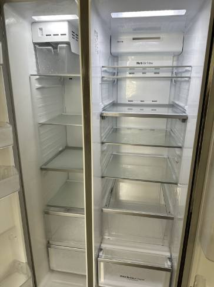
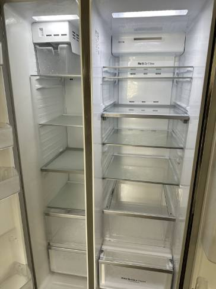
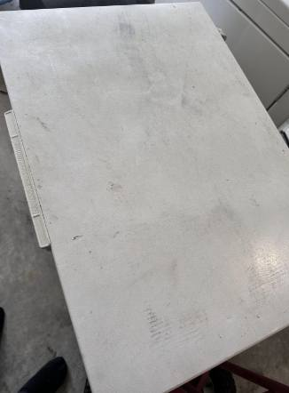
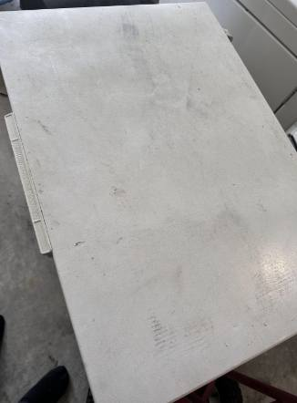
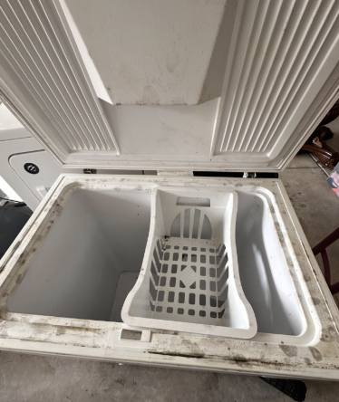
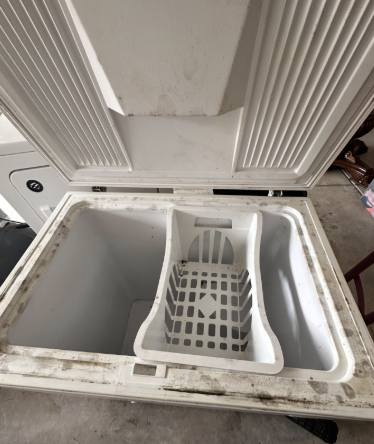
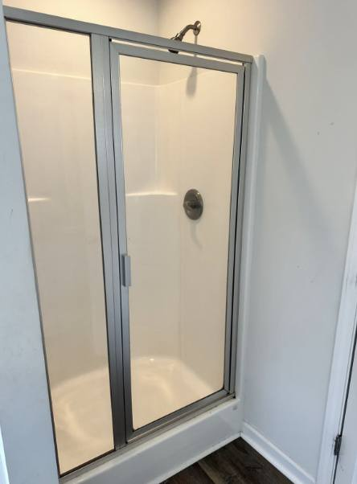
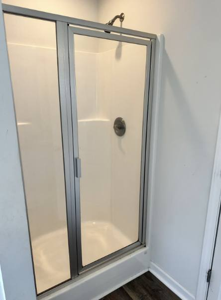

Meet the Owner

Hello! My name is Tiara Wilder, and I'm the proud owner of Wilder Residential Services. As a single mom and small business owner, I know how important it is to come home to a space that feels clean, comfortable, and stress-free. That's why I started this business—to help families, professionals, and busy individuals enjoy more peace of mind in their homes.
I've been serving the Sumter area and neighboring communities like Columbia, Bishopville, and Hartsville for the past two years, and I take pride in providing reliable, detailed, and personalized cleaning services. For me, this work isn't just about cleaning—it's about creating a welcoming environment where people can truly relax and focus on what matters most.
When you choose Wilder Residential Services, you're not just hiring a cleaning company—you're supporting a local small business that values trust, consistency, and care.
Our Story
Wilder Residential Services was founded in 2023 with a simple mission: to bring comfort, care, and peace of mind into every home that we clean. What started as a one-woman operation in Sumter, South Carolina, has grown into a trusted small business that proudly serves families and homeowners in Sumter, Bishopville, Hartsville, Columbia, and surrounding areas.
As a single mom and entrepreneur, I understand the importance of creating a clean, safe, and welcoming home environment. That's why Wilder Residential Services isn't just about cleaning—it's about caring for your home as if it were my own.
Over the past two years, we've had the honor of helping families, busy professionals, and neighbors reclaim their time and enjoy the comfort of fresh, peaceful spaces. With each service, I bring reliability, attention to detail, and the personal touch that only a small, locally owned business can provide.
At Wilder Residential Services, every sweep, shine, and sparkle reflects not only our commitment to quality, but also the heart and dedication behind the business.
See How We've Helped Our Community
 


 

 

 
